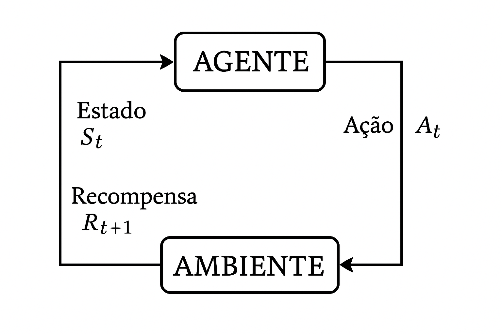
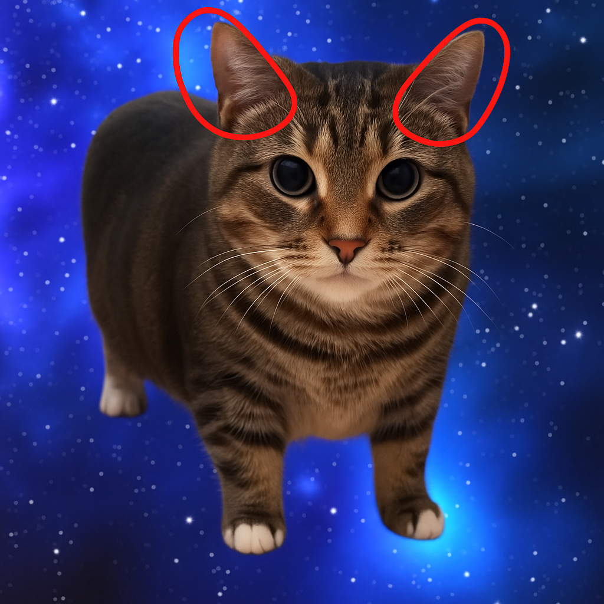
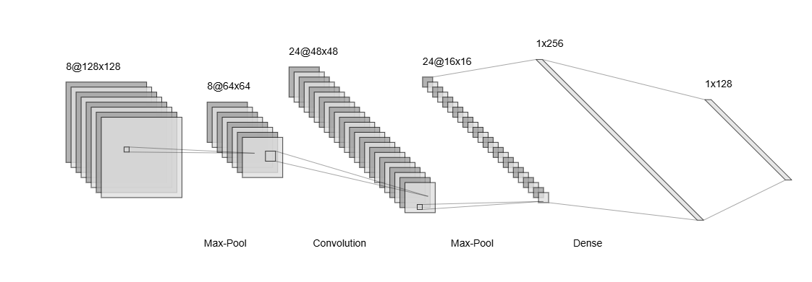
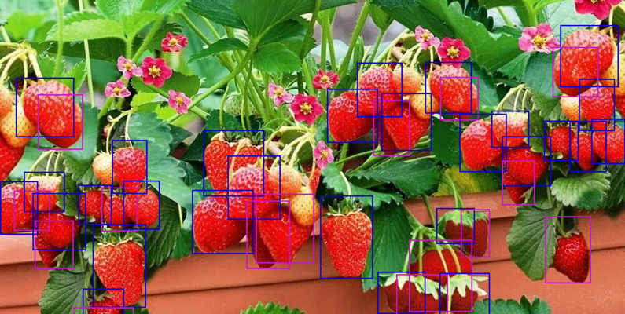
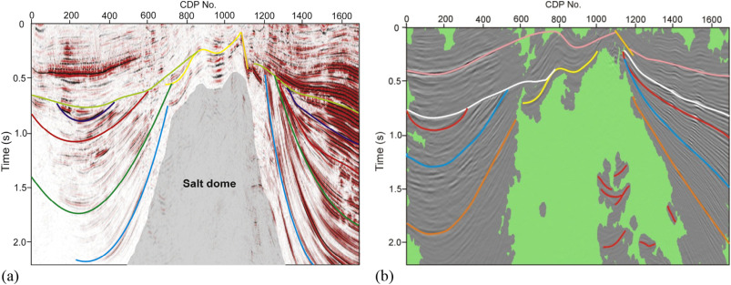
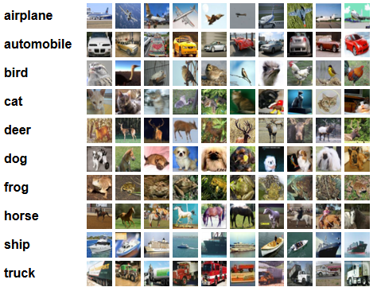
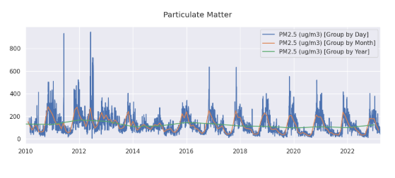

Pergunta
Machine learning e deep learning ainda são relevantes na era das LLMs?
Qual a organização?
 {fig-align=“center”,width=270}
{fig-align=“center”,width=270}
O que é o machine learning?
| 2.500 |
8 |
Alto |
| 4.800 |
36 |
Baixo |
| 3.200 |
12 |
Médio |
| 8.500 |
60 |
Baixo |
| 1.800 |
3 |
Alto |
| 5.300 |
24 |
Baixo |
Subdivisões do Machine learning
Aprendizado supervisionado
Regressão
Regressão
\[
y = 0.00028 \cdot x -452196
\]
Regressão
Classificação
Classificação
Aprendizado supervisionado
Scikit-learn
Aprendizado supervisionado
| 1 |
45 |
29.0 |
130 |
80 |
✅ Sim |
| 2 |
34 |
22.5 |
98 |
70 |
❌ Não |
| 3 |
54 |
31.2 |
145 |
85 |
✅ Sim |
| 4 |
29 |
24.1 |
92 |
75 |
❌ Não |
| 5 |
62 |
33.8 |
160 |
90 |
✅ Sim |
Detecção de fraude
Robô cometendo fraude
Previsão de churn
| customer_id | idade | tempo_de_contrato (meses) | valor_mensal | utilizacao_app (dias/mês) | reclamacoes | churn |
|-------------|-------|--------------------------|--------------|---------------------------|-------------|-------|
| 001 | 25 | 12 | 79.90 | 22 | 0 | 0 |
| 002 | 42 | 6 | 99.90 | 10 | 2 | 1 |
| 003 | 34 | 24 | 59.90 | 25 | 0 | 0 |
| 004 | 28 | 3 | 89.90 | 5 | 1 | 1 |
| 005 | 50 | 36 | 49.90 | 30 | 0 | 0 |
Otimização de cadeia de suprimentos
| produto_id | centro_distribuicao | estoque_atual | demanda_prevista | tempo_reposicao (dias) | custo_transporte | prioridade |
|------------|---------------------|---------------|------------------|-----------------------|------------------|------------|
| 1001 | SP | 150 | 200 | 2 | 500 | 1 |
| 1002 | RJ | 80 | 60 | 3 | 400 | 2 |
| 1003 | MG | 50 | 100 | 5 | 700 | 1 |
| 1004 | RS | 200 | 180 | 4 | 300 | 3 |
| 1005 | BA | 90 | 120 | 6 | 600 | 2 |
Aprendizado não-supervisionado
| 1 |
45 |
29.0 |
130 |
80 |
| 2 |
34 |
22.5 |
98 |
70 |
| 3 |
54 |
31.2 |
145 |
85 |
| 4 |
29 |
24.1 |
92 |
75 |
| 5 |
62 |
33.8 |
160 |
90 |
Clustering
PCA
Aprendizagem por reforço

Genshin Impact
Aprendizagem por reforço
Aprendizagem por reforço
Perceptron
\[
\hat{y} = f\left( \sum_{i=0}^{m} w_i x_i \right)
\]
Propagação
| 1 |
45 |
29.0 |
130 |
80 |
✅ Sim |
| 2 |
34 |
22.5 |
98 |
70 |
❌ Não |
| 3 |
54 |
31.2 |
145 |
85 |
✅ Sim |
| 4 |
29 |
24.1 |
92 |
75 |
❌ Não |
| 5 |
62 |
33.8 |
160 |
90 |
✅ Sim |
Arquiteturas de Redes Neurais

https://www.asimovinstitute.org/neural-network-zoo/
Redes Neurais Convolucionais (CNNs)
Redes Neurais Convolucionais (CNNs)

Redes Neurais Convolucionais (CNNs)
https://alexlenail.me/NN-SVG/LeNet.html
Visão Computacional para Indústria 4.0
https://www.kaggle.com/datasets/salmaneunus/railway-track-fault-detection
Saúde
https://www.kaggle.com/datasets/paultimothymooney/chest-xray-pneumonia
Sustentabilidade e Meio Ambiente
https://www.kaggle.com/datasets/akhilchibber/deforestation-detection-dataset
Detecção de objetos - Agricultura
https://www.kaggle.com/datasets/trainingdatapro/ripe-strawberries-detection
Segmentação de objetos
https://www.sciencedirect.com/science/article/abs/pii/S0926985117307632
Transferência de aprendizado
https://www.cs.toronto.edu/~kriz/cifar.html
Transferência de aprendizado
Transferência de aprendizado
Fine-tuning
Transferência de domínio
Redes Neurais Recorrentes (RNNs)
Redes Neurais Recorrentes (RNNs)
Séries temporais
https://www.kaggle.com/datasets/abhisheksjha/time-series-air-quality-data-of-india-2010-2023/data
Completação de texto ou código
Time Series Air Quality
Inteligência Artificial Generativa
LLMs (Large Language Models)
GANs (Redes Generativas Adversariais)
Diferenças entre LLMs, GANs e Modelos de Difusão
Aplicações de IA Generativa
Casos de Uso em Recomendação
Casos de Uso em Automação
Casos de Uso em Criação de Conteúdo
Desafios e Limitações da IA
Generalização e Robustez dos Modelos
Considerações Éticas em IA
Futuro do Machine Learning e IA Generativa
RAG
Ingestão de documentos - Docling
Vector Stores
Vector Stores
 {fig-align=“center”,width=270}
{fig-align=“center”,width=270}